MM32 Flash 介绍¶
Flash 发展史¶
相对于许多计算机技术而言，闪存的发展史相对短暂，但它可以说是应巨大且快速变化的存储市场要求而迅速成长的一项技术。起源于60年代末，80年代初提出概念，在过去的数十年发展中已然成熟，现在让我们回溯时光,去探知一段属于闪存（Flash Memory）的辉煌发展史。
-
1967年：贝尔实验室（Bell Lab）的施敏博士（Simon Sze）和韩裔同事姜大元（Dawon Kahng）休息吃甜点时，用了一层又一层的涂酱，触动了二人的灵感，想到在金属氧化物半导体场效电晶体（MOSFET）中间加入一层金属层，结果发明了浮栅MOSFET。浮栅MOSFET成了后来Flash、EEPROM和EPROM的基础。
-
1970年：英特尔（Intel）工程师Dov Frohman发明第一款成功的浮栅型器件——EPROM，通过照射紫外线光擦除，在存储软件中广受欢迎，对英特尔成功推出微处理器非常重要。英特尔联合创始人戈登·摩尔（Gordon Moore）称这项创新为“与微处理器一样，在计算机行业的发展中同样重要”。
-
1979-81年。Eli Harari，美国闪存存储开发商SanDisk(闪迪)创始人，当时受聘于英特尔，发明了世界上首个电可编程和可擦除存储器——EEPROM，并展望了浮栅的未来愿景——取代磁盘，但提案被当时的英特尔CEO Andy grove否决。
-
1984年。闪存之父Fujio Masuoka博士在东芝时提交了一份关于浮栅新用途的行业白皮书，整个芯片的内容都可以在相机的闪光（flash）的瞬间被擦除。之后Masuoka博士在圣何塞举行的IEEE 1984综合电子设备大会上正式介绍了闪存（Flash Memory）。
-
1986年。英特尔提出闪存卡概念，成立SSD研发部门。
-
1987年，Masuoka博士又再接再厉发明了NAND闪存即2D NAND。
-
1988年。英特尔看到了闪存的巨大潜力，推出了首款商用闪存芯片，成功取代了EPROM产品，主要用于存储计算机软件。同年3月1日，Eli创立Sundisk(后更名为SanDisk闪迪)，致力于让闪存更像一块磁盘用来存储数据。
-
1989年。SunDisk提交了系统闪存专利。M-Systems成立，不久推出闪存磁盘概念，这是闪存SSD的先驱。同年，英特尔发售了512K和1MB NOR Flash。Psion推出了基于闪存的PC。微软与英特尔合作推出了闪存文件系统。西部数据则与SunDisk完全模拟传统的旋转ATA硬盘，推出了基于NOR Flash的SSD。随后三星和东芝各自推出NAND闪存，擦写时间更快，密度更高，比NOR Flash成本更低，并且拥有高于十倍的耐用性。但其的I/O接口只允许顺序访问数据，适用于诸如PC卡和各种存储卡类的大容量存储设备。
-
1990年。东芝完成NAND Flash原型设计；Psion公司推出首台基于闪存的PC机MC600，包括640K内存、1M内置磁盘和256K闪存（含有MS-DOS 3.22）。
-
1991年。SunDisk推出首款基于闪存的ATA SSD，容量为20MB。当时10000台IBM ThinkPad掌上笔记本电脑提供SSD取代磁盘的服务支持。东芝发布全球首个4 MB NAND闪存。柯达以13000美元的价格发售了第一台专业数码相机DSC100，带有200Mb的存储空间，机身重量7公斤。Zenith Poqet和惠普在计算机展销会上展示了使用闪存卡的掌上笔记本电脑。
-
1992年。AMD和富士通推出了首款NOR产品。英特尔推出包括第二代FFS 2，8MB闪存芯片，4MB-20MB线性闪存卡和用于BIOS应用的1MB Boot Block NOR Flash，首次采用内部写状态机管理闪存写算法。SunDisk则推出了PCMCIA闪存卡。自1992年开始，PC开始采用闪存进行BIOS存储。
-
1993年。英特尔推出了16MB和32MB NOR Flash。英特尔和康纳联合开发了5MB/10MB ATA闪存盘。苹果在他们的Newton PDA中开始使用NOR Flash。
-
1994年。SunDisk针对SSD应用推出Compact Flash卡和18MB串行NOR Flash芯片。
-
1995年。SunDisk更名为SanDisk（闪迪）推出了34MB 串行NOR Flash，这是首款面向SSD应用的MLC闪存芯片。
-
1996年。东芝推出了SmartMedia存储卡，也称为固态软盘卡。三星开始发售NAND闪存。SanDisk推出了采用MLC串行NOR技术的第一张闪存卡。
-
1997年。英飞凌（Infineon）和SanDisk共同推出MultiMedia Card（MMC），手机开始配置闪存，消费级闪存市场就此打开；
-
1999年。NOR Flash营收超过40亿美元。东芝和SanDisk合作创建了闪存制造合资企业。美光宣布超过10亿个闪存芯片已发售。
-
2000年。东芝和闪迪合资创立闪存制造企业FlashVision，建设8英寸生产线；
-
2001年。东芝与SanDisk宣布推出1GB MLC NAND。SanDisk自己推出了首款NAND系统闪存产品。日立推出了AG-AND。三星开始批量生产512MB闪存设备。
-
2002年。超微半导体、富士通和赛芬（Saifun）宣布经达成合作、交叉许可专利和技术的协议，并和解三方之间所有尚未结案的诉讼，并共同研发闪存技术MirrorBit，容量为64M。
-
2003年。Fujitsu AMD Semiconductor Limited（FASL）更名飞索（Spansion），推出全球首款采用130/110纳米第二代MirrorBit工艺技术512MbNOR闪存芯片。
-
2004年。NAND的价格首次基于同等密度降至DRAM之下，成本效应让闪存走入计算领域。
-
2005年。苹果公司推出两款基于闪存的iPod——iPod shuffle和iPod nano。微软发布混合硬盘概念。MMCA（多媒体卡协会）推出MMCmicro卡。三星率先采用70nm制程量产NAND闪存。美光也推出了NAND产品。同年超过30亿闪存芯片发售被发货。 NAND总发售容量超过DRAM。
-
2006年。闪存营收超过200亿美元。英特尔推出Robson Cache Memory，现在称为Turbo Memory（迅盘）。微软推出ReadyBoost。SanDisk宣布推出单元存储4比特的NAND技术和microSDHC卡。与此同时，SanDisk还收购了Martix Semiconductor和M-Systems两家公司。三星和希捷展示了首款混合硬盘。美光和英特尔正式合作组建IMFT，用于制造NAND闪存。Spansion推出ORNAND闪存，并宣布开始采用65nm制程工艺生产300mm晶圆。
-
2007年。闪存营收突破220亿美元（NAND 营收145亿美元）。东芝推出eMMC NAND以及首款基于MLC SATA的固态硬盘。 IMFT开始发售50nm NAND闪存。Apple正式推出了初代配置4GB或8GB闪存的iPhone。Fusion-io宣布推出基于 MLC NAND的640 GB ioDrive。BitMicro面向军事应用推出3.5英寸SSD，容量为1.6TB。 Spansion收购了Saifun。戴尔对自身笔记本电脑配置加入了SSD选项，售价低于200美元的上网本加入了闪存存储。希捷推出了第一款混合硬盘——Momentus PSD。
-
2008年。SanDisk推出ABL以实现加速MLC，TLC和X4 NAND。英特尔和美光宣布推出34nm MLC NAND。东芝首次推出了512GB的MLC SATA SSD。IBM首次展示了“百万IOPS”的闪存阵列。 EMC宣布将基于闪存的SSD用于企业SAN应用。苹果推出了两代MacBook Air，分别配备64GB和128GB SSD，没有硬盘选项。美光，三星和Sun Microsystems宣布推出高耐用性闪存。Violin首次推出基于全闪存的存储设备。三星宣布推出150GB 2.5英寸MLC SSD。美光推出首款串行NAND闪存。东芝开发了3D NAND结构BICS。
-
2009年。英特尔和美光推出34nm TLC NAND。三星推出首款配置64GB SSD的全高清摄录一体机。希捷进入SSD市场。SandForce推出了第一款基于数据压缩的SSD控制器。Virident和Schooner针对数据中心推出了第一款基于闪存的应用设备。Plaint推出了首款SAS SSD。 SanDisk发售每单元存储4比特的SDHC和Memory Stick Pro卡。西部数据收购了SiliconSystems进入SSD市场。SanDisk推出了号称数据可保存100年的闪存存储库。
-
2010年。东芝推出基于16核堆栈的128GB SD卡。英特尔和美光公司推出25nm TLC和MLC NAND。同年，Numonyx被美光收购、SST被Microchip收购。三星开始生产64 GB MLC NAND。希捷宣布推出首款自管理混合硬盘——Momentus XT。
-
2011年。是一个收购年。LSI收购SandForce；SanDisk收购IMFT，苹果收购Anobit，Fusion-io收购IO Turbine。希捷推出了第二代Momentus XT混合硬盘，拥有8GB NAND闪存和750GB HDD存储容量。
-
2012年。三星创造了3D NAND，推出第一代3D NAND闪存芯片，也是第一款32层 SLC V-NAND SSD——850 PRO。SanDisk和东芝宣布推出支持128GB芯片的19nm闪存。希捷推出了结合闪存和HDD的SSHD。Elpida推出ReRAM。美光和英特尔推出20nm的128Gb NAND芯片。SK电信收购海力士半导体的控股权，SK海力士成立。Spansion推出了8Gb NOR芯片。SanDisk收购了FlashSoft。OCZ收购了Sanrad。三星收购了NVELO。英特尔收购了Nevex并推出CacheWorks。LSI推出了配置MegaRAID CacheCade缓存软件的Nytro闪存。美光推出了2.5英寸企业级PCIe SSD。
-
2013年。三星宣布推出24层3D V-NAND，并在2013年美国闪存峰会（FMS）上展示了1TB SSD。Diablo Technologies宣布推出内存通道存储技术。SMART Storage Systems将Diablo的设计纳入ULtraDIMM。西部数据和SanDisk采用iSSSD+HDD推出了SSHD。东芝推出了一系列SSHD。Everspin宣布发售STT MRAM。M.2 PCIe接口正式发布NVMe标准，以加速与闪存存储的通信。西部数据先后收购了sTec，Virident和Velobit。SanDisk收购SMART Storage Systems。美光收购了破产的日本芯片制造商尔必达。英特尔推出了英特尔缓存加速软件。
-
2014年。三星，SanDisk和东芝宣布推出3D NAND生产设备。SanDisk推出了4TB企业级SSD，还发布了128GB microSD卡。IBM宣布其eXFlash DIMM采用了SanDisk ULLtraDIMM以及Diablo的内存通道存储技术。三星还开始发售32层 MLC 3D V-NAND——850 EVO。
-
2015年。SanDisk推出InfinitiFlash存储系统。赛普拉斯半导体收购Spansion。东芝和SanDisk宣布推出48层3D NAND。英特尔和美光宣布推出384GB 3D NAND。三星推出首款NVMe m.2固态硬盘和48层 V-NAND。SanDisk推出 200GB microSDXC UHS-I卡。赛普拉斯推出4MB串行FRAM。英特尔和美光宣布推出3D XPoint Memory。英特尔还基于XPoint技术推出了Optane DIMM和SSD。
-
2016年。东芝发售了用于iPhone 7的48层TLC NAND。同年，SK海力士基于36层堆叠技术发售了用于LG V20的UFS系列产品。武汉新芯集成电路制造有限公司（XMC）在中国开设第一家NAND闪存工厂。美光展示了768GB 3D NAND。西部数据以190亿美元的价格收购SanDisk。Everspin在年底前宣布推出256MB MRAM芯片和1 GB芯片。IBM发布TLC PCM存储芯片。英特尔着手向企业级市场发售3D NAND产品，而美光则改道消费级市场发售SSD。
-
2017年，SK海力士发售72层3D NAND。东芝。英特尔发售Optane SSD。HPE（新华三）收购Nimble和Simplivity。三星与东芝/西部数据发售96层3D NAND。美光发售字符串堆栈3D NAND。Everspin发布1GB STT-MRAM芯片样品。同年，2005年成立的闪存阵列老牌厂商Violin Memory破产后被私有化，目前已重回存储舞台。
-
2018年，贝恩资本财团完成对东芝闪存业务的180亿美元收购案。英特尔发布Optane DC（数据中心）持久性内存。三星发布告诉Z-SSD。国家集成电路产业投资基金一期针对国内半导体行业投资1387亿元，共公开投资了23家国内半导体企业。紫光集团旗下长江存储研发32层3D NAND芯片并在年底量产，更计划在2020年跳过96层3D NAND，直接进入128层堆叠。同年，混合闪存初创公司Tintri申请破产，其资产被HPC存储供应商DDN以6000万美元购得。
磁盘的组织结构¶
盘片与盘面¶
一个磁盘由多个盘片叠加而成。盘片的表面涂有磁性物质，这些磁性物质用来记录二进制数据。因为正反两面都可涂上磁性物质，故一个盘片可能会有两个盘面。
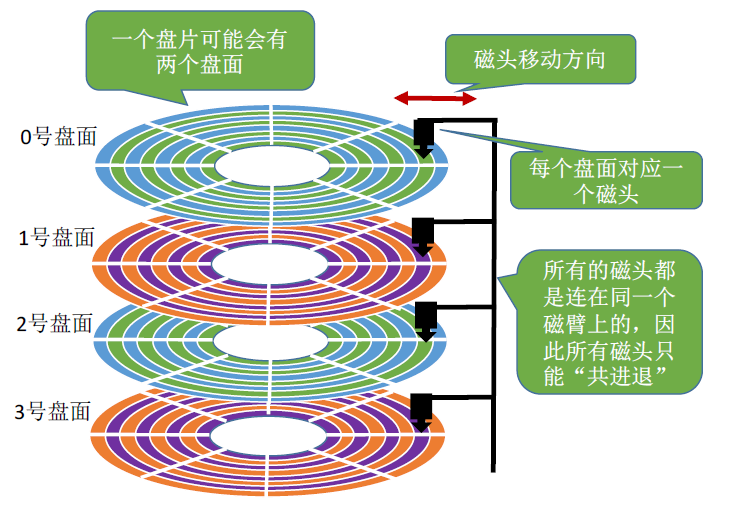
磁道与扇区¶
每个盘片被划分为一个个磁道，每个磁道又划分为一个个扇区。通常情况下每个扇区的大小是512字节。（由于不断提高磁盘的大小，部分厂商设定每个扇区的大小是4096字节）。如下图：

柱面¶
每个盘面对应一个磁头。所有的磁头都是连在同一个磁臂上的，因此所有磁头只能“共进退”。
所有盘面中相对位置相同的磁道组成柱面。如下图：
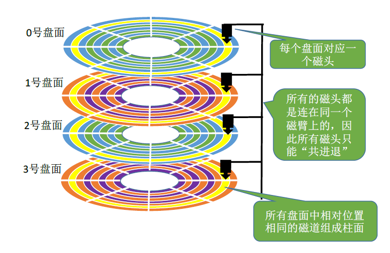
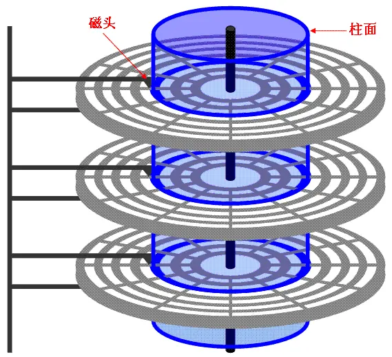
磁盘的物理地址¶
由上，可用（柱面号，盘面号，扇区号）来定位任意一个“磁盘块”。
磁盘块¶
与扇区对应的逻辑层面上的概念是： 磁盘块（虚拟出来的）。 块是操作系统中最小的逻辑存储单位。操作系统与磁盘打交道的最小单位是磁盘块。既然磁盘块是一个虚拟概念。是操作系统自己＂杜撰＂的。软件的概念，不是真实的。所以大小由操作系统决定，操作系统可以配置一个块多大。 一个块大小=一个扇区大小*2的n次方。N是可以修改的。
簇¶
通俗的来讲，在Windows下如NTFS等文件系统中叫做簇；在Linux下如Ext4等文件系统中叫做块（block）。每个簇或者块可以包括2、4、8、16、32、64…2的n次方个扇区。
块与页的关系¶
操作系统经常与内存和硬盘这两种存储设备进行通信，类似于“块”的概念，都需要一种虚拟的基本单位。所以，与内存操作，是虚拟一个页的概念来作为最小单位。与硬盘打交道，就是以块为最小单位。
Flash 中的扇区、页、块¶
Flash 使用了磁盘技术中的扇区、页、块这些概念，只是不同的厂商所定义的扇区、页、块，可能大小并不一样。以下举例说明。
-
MM32F5370。Flash每页大小为1k字节。
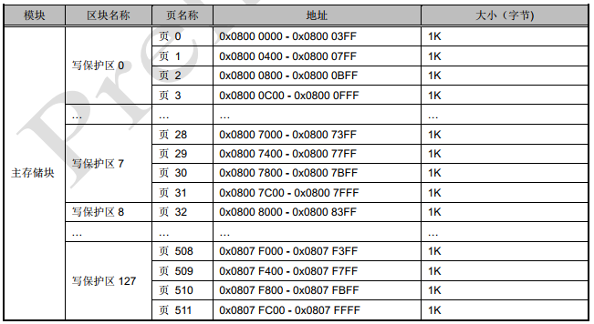 -
S29GL-P MirrorBit® Flash Family。每个扇区128k字节。
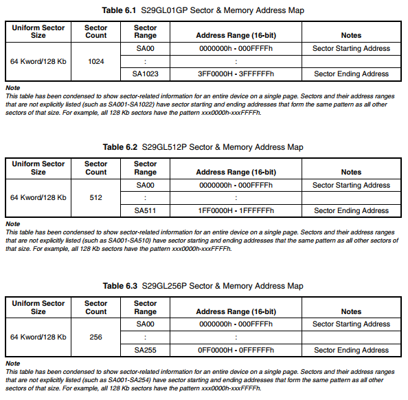
提供16字节的页读buffer
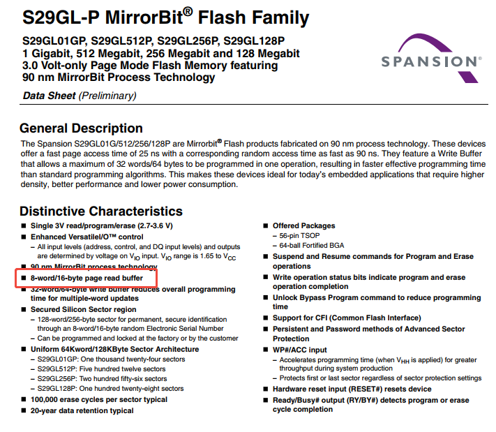 -
K9F1G08U0E。每页128k字节，每块64页，设备共1024个块。
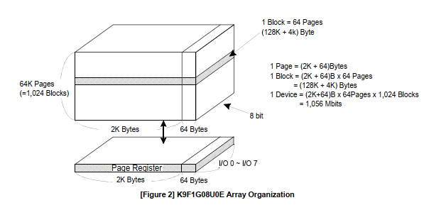 -
W25Q16JV。每个扇区4k字节，每个块16个扇区，设备共32块。
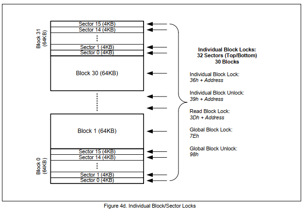
每页256字节
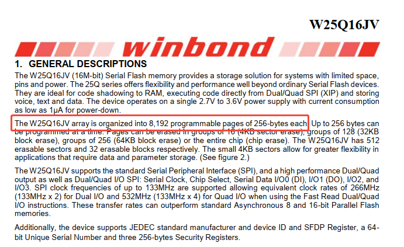
MM32 Flash 构成¶
Flash由主存储块以及信息存储块组成。信息存储器可以分为保密空间、Data 空间、系统储存器ISP、选项字节。信息存储块中，除了“系统存储器ISP”区域出厂锁定，用户不可写入外，其余部分在一定条件下可以进行读写操作。
每个系列的闪存实际大小有差异，部分区域大小划分、部分寄存器也存在差异，具体系列的闪存构成和寄存器信息，需查看对应的UM文档。UM中“嵌入式闪存”章节的“闪存构成与说明”小节有专门描述。
以MM32F5370为例，列出Flash各部分的详细组织结构。
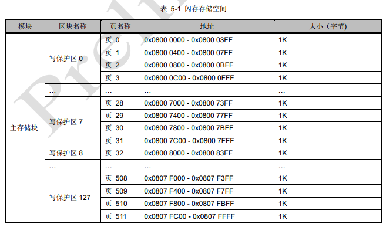
 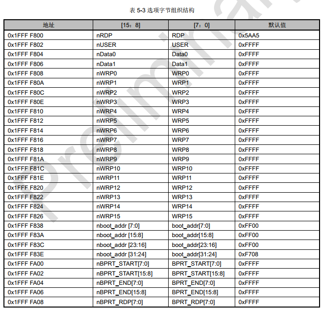
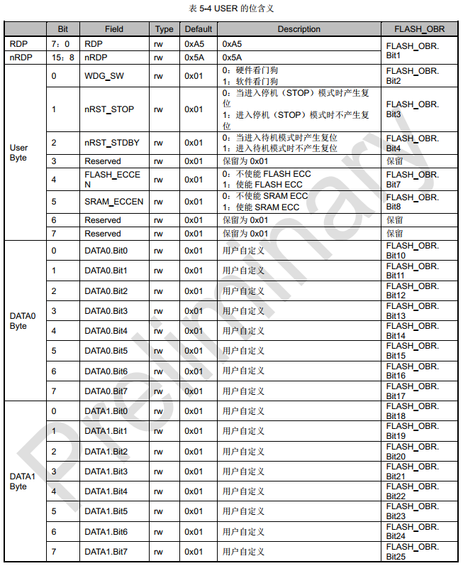
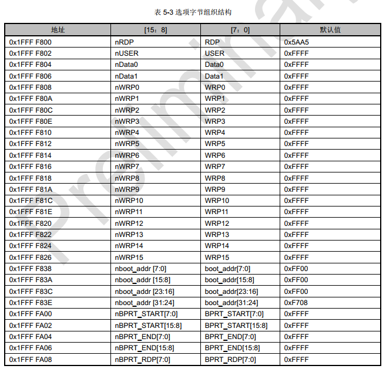
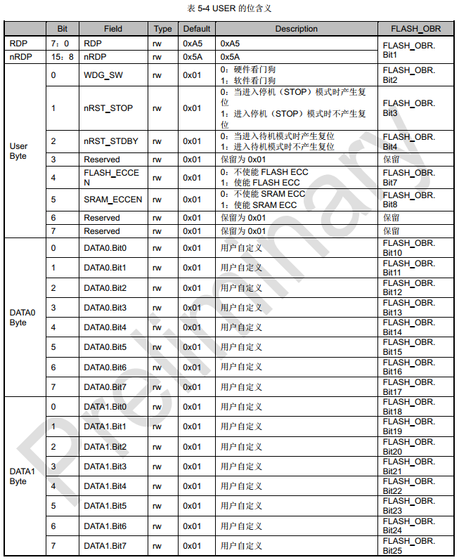
MM32 Flash 基本操作¶
解锁¶
复位后，Flash存储器默认是被保护的状态。FLASH_CR寄存器不允许被改写。若要开启对FLASH_CR寄存器的访问权限，则需要执行特定的序列。主要从闪存块和选项字节两部分进行说明。所有系列的解锁序列保持不变。
对闪存块操作限制的解除与使能¶
先后向FLASH_KEYR寄存器写入0x45670123和0xCDEF89AB。序列正确写入之后，FLASH_CR的LCOK为置0，然后就能对FLASH_CR进行访问。
解除保护操作代码：
#define FLASH_KEY1 ((unsigned int)0x45670123)
#define FLASH_KEY2 ((unsigned int)0xCDEF89AB)
void FLASH_Unlock()
{
FLASH->KEYR = FLASH_KEY1;
FLASH->KEYR = FLASH_KEY2;
}
不符合上述顺序的操作与写入错误的值，将会锁死 FLASH_CR ，并引发一个总线错误，直至下次 复位。
使能保护操作代码：
#define FLASH_CR_LOCK_Pos (7)
#define FLASH_CR_LOCK (0x01U << FLASH_CR_LOCK_Pos)
void FLASH_Lock(void)
{
FLASH->CR |= FLASH_CR_LOCK;
}
对选项字节区块操作限制的解除和使能¶
闪存控制器在复位后，它的选项字节信息块默认是处于写保护的，并且任何时候都是可读的。同样是为了避免对选项字节信息块做块擦除和写值等破坏性操作，复位后， FLASH_CR 寄存器进入锁定状态，FLASH_CR 的 LOCK 位被控制器模块置为 1，而 OPTWRE 位被控制器模块清为 0；因此需先后向FLASH_KEYR 寄存器写入 0x45670123 和 0xCDEF89AB 做解锁闪存操作， FLASH_CR 的 LOCK 位清为 0 后，才做选项字节信息块的解锁。通过向 FLASH_OPTKEYR 寄存器先后写入 0x45670123 和 0xCDEF89AB ，从而使硬件将 FLASH_CR 寄存器的 OPTWRE 位置 1，才能对选项字节信息块执行块擦除，连续编程操作。可将 FLASH_CR 寄存器的 OPTWRE 位清为 0，从而禁止对选项字节信息块执行块擦除，连续编程操作。选项字节信息块包含选项字节区和分块保护配置区，每次只能擦除一块区域。
解除保护操作代码：
#define FLASH_KEY1 ((unsigned int)0x45670123)
#define FLASH_KEY2 ((unsigned int)0xCDEF89AB)
void FLASH_Unlock()
{
FLASH->KEYR = FLASH_KEY1;
FLASH->KEYR = FLASH_KEY2;
}
void FLASH_OPT_Unlock()
{
FLASH->OPTKEYR = FLASH_KEY1;
FLASH->OPTKEYR = FLASH_KEY2;
}
使能保护操作代码：
#define FLASH_CR_OPTWRE_Pos (9)
#define FLASH_CR_OPTWRE (0x01U << FLASH_CR_OPTWRE_Pos)
void FLASH_OPT_Lock(void)
{
FLASH->CR &= ~FLASH_CR_OPTWRE;
}
对分块保护区擦除限制的解除与使能¶
如果配置了分块保护区，闪存控制器复位后，此区域默认是处于擦除保护，这样是为了避免对此区域做误擦除等破坏性操作。复位后， FLASH_CR 寄存器进入锁定状态， FLASH_CR 的 LOCK 位被控制器模块置为 1，而 BPTERE 位被控制器模块清为 0；因此需先后向 FLASH_KEYR 寄存器写入0x45670123 和 0xCDEF89AB 做解锁闪存操作， FLASH_CR 的 LOCK 位清为 0 后，才做分块保护区擦除的解锁。通过向 FLASH_BPTKEYR 寄存器先后写入 0x45670123 和 0xCDEF89AB ，从而使硬件将 FLASH_CR 寄存器的 BPTERE 位置 1，才能对分块保护区执行页擦除操作（整块区域全擦）。可将FLASH_CR 寄存器的 BPTERE 位清为 0，从而禁止对分块保护区执行擦除操作。
解除保护操作代码：
#define FLASH_KEY1 ((unsigned int)0x45670123)
#define FLASH_KEY2 ((unsigned int)0xCDEF89AB)
void FLASH_Unlock(void)
{
FLASH->KEYR = FLASH_KEY1;
FLASH->KEYR = FLASH_KEY2;
}
void FLASH_BPT_Unlock (void)
{
FLASH->BPTKEYR = FLASH_KEY1;
FLASH->BPTKEYR = FLASH_KEY2;
}
对分块保护区擦除保护使能操作代码：
#define FLASH_CR_BPTERE_Pos (8)
#define FLASH_CR_BPTERE (0x01U << FLASH_CR_BPTERE_Pos)
void FLASH_BPT_Lock(void)
{
FLASH->CR &= ~FLASH_CR_BPTERE;
}
擦除¶
主闪存块擦除¶
闪存控制器支持整片擦除主闪存块和以页为单位擦除主闪存中的页。
整片擦除功能将初始化主闪存块的所有内容，使所有的值为 0xFFFF ，但信息存储块不会受这个命令影响。
当含有分块保护区域时执行全芯片擦除将会被忽略。
整片擦除操作的寄存器设置，具体步骤如下：
- 读 FLASH_CR 的 LOCK 位，确保解除闪存保护
- 否则执行 Flash Unlock
- 设置 FLASH_CR 寄存器中的 MER位为 1，使能对主闪存全片擦除功能
- 设置 FLASH_CR 寄存器中的 STRT 位为 1
- 开始对主闪存全擦除
- 检查 FLASH_SR 中的 BSY 位
- 等待对主闪存全擦除的操作完成
- 清除 FLASH_CR 寄存器中的 MER位，使该位为 0
- 可选做 Blank 检查，以确保擦除成功
页擦除操作的寄存器设置，具体步骤如下：
- 读 FLASH_CR 的 LOCK 位，确保解除闪存保护，否则执行 Flash Unlock
- 设置 FLASH_CR 寄存器中的 PER 位为1，使能页擦除功能
- 将待擦除页基地址写入 FLASH_AR 寄存器
- 设置 FLASH_CR 寄存器中的 STRT 位为1，开始页擦除
- 检查 FLASH_SR 中的 BSY 位
- 等待页擦除的操作完成
- 清除 FLASH_CR 寄存器中的 PER 位，使该位为 0
- 可选对这一页的内容做检查，以确保页擦除成功
- 连续多页擦除，可以重复 2~7 操作；直到完成所有页面擦除
！！！注意页擦除中，页的大小是否为512字节，一般为1024字节。
选项字节区擦除¶
擦除操作的寄存器设置，具体步骤如下：
- 读 FLASH_CR 的 LOCK 位，确保解除闪存保护，否则执行 FlashUnlock
- 读 FLASH_CR 的 OPTWRE 位，确保解除选项区块保护，否则执行选项区块 Unlock
- 把待擦除区块基地址写入FLASH_AR 寄存器
- 设置 FLASH_CR 寄存器中的OPTER 位为 1，使能选项字节信息块擦除功能
- 设置 FLASH_CR 寄存器中的STRT 位为 1
- 检查 FLASH_SR 中的 BSY 位
- 等待选项字节块擦除操作完成
- 清除 FLASH_CR 寄存器中的OPTER 位，设置值为 0
- 可选对这一区块的内容做检查，以确保对该区块擦除成功
- 连续多块擦除，可以重复 3~8 操作；直到完成所有选项信息块擦除
Data空间擦除¶
擦除操作的寄存器设置，具体步骤如下：
- 读 FLASH_CR 的 LOCK 位，确保解除 Flash 保护，否则执行 Flash Unlock
- 读 FLASH_CR 的 OPTWRE 位，确保解除选项区块保护，否则执行选项区块 Unlock
- 把待擦除Data区块基地址写入 FLASH_AR 寄存器
- 设置 FLASH_CR 寄存器中的 OPTER 位为 1，使能选项字节块擦除功能
- 设置 FLASH_CR 寄存器中的 STRT 位为 1
- 检查 FLASH_SR 中 BSY 位
- 等待 Data 区块擦除操作完成
- 清除 FLASH_CR 寄存器中的 OPTER 位，设置值为0
- 可选对这一区块的内容做检查，以确保对该区块擦除成功
- 连续多块擦除，可以重复 3~8 操作；直到完成所有选项区块擦除
！！！有的系列，如SPIN0230, 在芯片全擦除时，也会擦除此空间的数据。
编程¶
主闪存块编程¶
不同系列的编程有所差异，请按照对应 UM 进行编程。
主闪存控制器会预读待编程半字或是否为全 1（即是否为 0xFFFF或0xFFFFFFFF），如果不是，这次编程操作会自动取消，并且在 FLASH_SR 寄存器的 PGERR 位上提示编程错误警告。
如果待编程地址所对应的写保护块在 FLASH_WRPR 中的写保护位有效，同样也不会有编程动作， 同样也会产生编程错误警告，编程动作结束后，FLASH_SR 寄存器中得 EOP 位会给出提示。 因此在编程前需先解除写保护。
注意：当 CPU 进入省电模式时，通过 SWD 接口，对闪存操作将产生错误。避免在主闪存中运行中断程序时进行擦除或编程操作。
A. 主闪存只支持以16位为半字编程
若以其他位进行编程，则会引起硬件错误中断。当FLASH_CR的PG位为1时，直接对相应的地址写一个半字，就是一次编程。
主闪存块编程操作的寄存器设置，具体步骤如下：
- 读 FLASH_CR 的 LOCK 位，确保解除 Flash 保护，否则执行 Flash Unlock
- 设置 FLASH_CR 寄存器中的 PG 位为1，使能半字编程功能
- 以半字为单位向目标地址写入数据，目标地址需以半字对齐
- 检查 FLASH_SR 中的 BSY 位
- 等待半字编程操作完成
- 清除 FLASH_CR 寄存器中的 PG 位，使该位为 0
- 可选读目标地址数据，以确保半字编程成功
- 连续多个半字编程，可以重复 2~6 操作；直到完成所有目标地址的半字编
B. 主闪存仅支持以64位编程
当支持ECC，且ECC开启时，主闪存仅支持以64位编程，64位编程分4次16位半字编程实现、第一次16位半字编程地址必须是64位对齐，其余三次16为半字编程地址必须是在前一次16位半字编程地址基础上加2，用来修改主闪存块内容。如果以32位或8位编程将引起硬件错误中断。当FLASH_CR的PG位为1时，直接对相应的地址写一个半字，就是一次编程。
主闪存块编程操作的寄存器设置，具体步骤如下：
- 读 FLASH_CR 的 LOCK 位，确保解除 Flash 保护，否则执行 Flash Unlock
- 设置FLASH_CR寄存器中的 PG 位为 1
- 以半字为单位向目标地址写入数据，目标地址需以 64 位对齐
- 以半字为单位向目标地址+2 写入数据
- 以半字为单位向目标地址+4 写入数据
- 以半字为单位向目标地址+6 写入数据
- 检查 FLASH_SR 中的 BSY 位
- 等待编程操作完成
- 清除 FLASH_CR 寄存器中的 PG 位，使该位为 0
- 可选读目标地址数据，以确保编程成功
- 连续多个编程，可以重复 2~9 操作
C. 闪存支持连续编程
通过设置FLASH_CR.PGMD[2:0]为 1/ 2/ 3，主闪存支持以32/64/128为编程。32/64/128位编程分2/4/8次16为半字编程实现，第一次编程地址必须是32/64/128位对齐，其余1/ 3/ 7次16位半字编程地址必须在前一次16位半字编程地址基础上加2用来修改主存储闪存块内容。如果以 32 位整字的长度编程，将引起硬件错误中断。
当支持ECC功能且 FLASH ECC 开启时，FLASH_CR.PGMD[2：0]只能设定为 ⅔，否则将产生 非法编程操作，FLASH_SR.BSTERR 将被置 1。
当 FLASH_CR 中的 PG 位为 1 时，直接对相应的地址写 1/ 2/ 4/ 8 个半字（16/32/64/128 位），就是一次编程操作。 连续 16 位半字编程的次数可以通过读取 FLASH_PGCNT 的值来确认（PGMD 设定值较大时此操作可以避免次数的混乱，此功能部分系列支持，需查看具体UM的FLASH具体的寄存器说明）。
FLASH_CR.PGMD[2：0]=2 时，主闪存块编程操作的寄存器设置，具体步骤如下：
- 读 FLASH_CR 的 LOCK 位，确保解除闪存保护，否则执行 Flash Unlock
- 设置 FLASH_CR 寄存器中的 PGMD位为 2， PG 位为 1
- 以半字为单位向目标地址写入数据，目标地址需以 64 位对齐
- 以半字为单位向目标地址+2 写入数据
- 以半字为单位向目标地址+4 写入数据
- 以半字为单位向目标地址+6 写入数据
- 检查 FLASH_SR 中的 BSY 位
- 等待编程操作完成
- 清除 FLASH_CR 寄存器中的 PG位，使该位为 0
- 可选读目标地址数据，以确保编程成功
- 连续多个编程，可以重复 2~9 操作
选项字节区编程¶
选项字节信息块的编程与主闪存块地址的编程不同，因其写入值复位后加载到配置选项，需要更加严格的保护。解除对闪存控制器的访问限制后，还需要对选项字节信息块解除访问限制。完成该操作后，FLASH_CR 寄存器中的 OPTWRE 位会被置 1，才能允许后续的编程操作。
其中选项字节区内有效数据为低 8 位，而高 8 位为低 8 位的反码，从而组成为 16 位数据。在编程过程中，软件将高 8 位设置为低 8 位的反码，保证选项字节的写入值总是对的，然后依次写入 16 位数据。
当选项字节被改变时，需要系统上电复位使之生效。
A. 16位编程
- 读 FLASH_CR 的 LOCK 位，确保解除 Flash 保护，否则执行 Flash Unlock
- 读 FLASH_CR 的 OPTWER位，确保解除选项字节信息块保护，否则执行 选项字节信息块Unlock
- 设置 FLASH_CR 寄存器中的 OPTPG 位为1，使能半字编程功能
- 以半字为单位向目标地址写入数据，目标地址需以半字对齐
- 检查 FLASH_SR 中的 BSY 位
- 等待半字编程操作完成
- 清除FLASH_CR寄存器OPTPG 位，使该位为 0
- 可选读目标地址数据，以确保半字编程成功
- 连续多个半字编程，可以重复 3~7 操作；直到完成所有目标地址的半字编程
B. 64位编程
当支持ECC，且ECC开启时，仅支持64位编程。
- 读 FLASH_CR 的 LOCK 位，确保解除Flash 保护，否则执行 Flash Unlock
- 读 FLASH_CR 的 OPTWER位，确保解除选项字节信息块保护，否则执行 选项字节信息块Unlock
- 设置FLASH_CR寄存器中的 OPTPG 位为 1
- 以半字为单位向目标地址写入数据，目标地址需以 64 位对齐
- 以半字为单位向目标地址+2 写入数据
- 以半字为单位向目标地址+4 写入数据
- 以半字为单位向目标地址+6 写入数据
- 检查 FLASH_SR 中的 BSY 位
- 等待编程操作完成
- 清除 FLASH_CR 寄存器中的 OPTPG 位，使该位为 0
- 可选读目标地址数据，以确保编程成功
- 连续多个编程，可以重复 3~10 操作
C. 连续编程
原理同主闪存块编程。步骤根据情况与本节2种方式一致。
Data空间编程¶
Data空间编程与主闪存块地址的编程不同，需要按照选项字节的方式进行编程。解除对闪存控制器的访问限制后，还需要对选项字节信息块解除访问限制。完成该操作后，FLASH_CR 寄存器中的 OPTWRE 位会被置 1，才能允许后续的编程操作。
读 Flash¶
按闪存访问控制寄存器（FLASH_ACR）中的设定的方式，闪存通过 AHB 总线执行取指令或取数据。结合 AHB 时钟，设定相应的访问时延（Latency），使能预取缓冲区后，可提高 CPU 的取指令速度，从而提高 CPU 的运行速度。访问时延（Latency）在 SYSCLK 低于等于 24MHz，可以设定为 0，此后每增加24MHz，需要增加一个时延。
上电复位后，闪存控制器默认设定预取缓冲区是打开的。如需要关闭或重新打开预取缓冲功能，必须设定 SYSCLK 低于 24MHz，并且 AHB 时钟没有经过任何分频的条件下（SYSCLK 必须等于 HCLK）才可以关闭或重新打开预取缓冲功能。
为了保护对闪存的正确读取，必须在闪存访问控制寄存器中的 LATENCY[2： 0] 中指定预取控制器的速度比，这个数值等于每次访问闪存后到下次访问之间所需插入的等待周期的个数。复位后，这个值默认为零，也就是没有插入等待周期的状态，相应的系统时钟也复位为使用内置时钟 HSI=8MHz。复位后如果需要修改系统时钟，必须先配置好安全的 LATENCY[2： 0] 值，而当 AHB 时钟的预分频器大于 1 时，预取缓冲区也需设定相应的访问时延（Latency）。
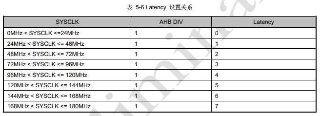
闪存保护¶
主闪存块使能读写保护可以防范主闪存块的代码被不可信的代码读出，也可以防范在程序跑飞的时候对主闪存块的意外擦除与编程。使能读保护的范围是整个主闪存块，而使能写保护的最小单位是一个写保护块（即 4 页）。
读保护¶
主闪存块使能或解除读保护是通过从内置 SRAM 或 ICP、 ISP 方式设置 RDP 半字，然后系统重新上电复位，加载了新的 RDPs 后起作用。设置读保护，需要执行一次上电复位，而不是系统复位，才能起作用。
使能读保护：
按选项字节区半字编程的操作方式，按顺序写 RDP 半字到对应地址。
- 设置 FLASH AR 地址值为 0x1FFFF800，执行该选项字节区擦除。
- 按选项字节区半字编程的操作方式，按顺序写 0x807F 半字到对应地址。
- 进行上电复位以重新加载选项字节，此时读保护被使能。
当读保护半字被写入相应的值以后：
- 只允许从用户代码执行对主闪存存储器的读操作（以非调试方式从主闪存存储器启动）。
- 读保护后，调试模式下（SRAM boot 和 debug 模式）禁止对闪存进行操作。
- MCU 可以通过在主闪存存储器中执行的代码进行编程（实现 IAP 或数据存储等功能），但不允许在调试模式下或从内部 SRAM 启动后执行主闪存块写或页擦除操作（整片擦除除外）。
- 所有通过 SWD 向内置 SRAM 装载代码并执行代码的功能依然有效，亦可以通过 SWD 从内置SRAM 启动，这个功能可以用来解除读保护。
- 通过从内置 SRAM 执行代码访问主闪存存储器的操作，通过 DMA、 SWD（串行线调试）对闪存的访问都将被禁止。
解除读保护：
从内置 SRAM 或 ICP 方式解除读保护的过程是：
- 设置 FLASH_AR 地址值为 0x1FFFF800，执行该选项字节区擦除。
- 按选项字节区半字编程的操作方式，按流程写 0x5AA5 半字到对应地址。
- 进行上电复位以重新加载选项字节，此时读保护被解除。
注意：
- 如选项字节区对应的地址值为非 0xFFFF，需先执行擦除选项字节区的动作，执行擦除选项字节区的动作不会导致自动的整片擦除操作，不会改变读保护状态。
- 写 0x5AA5 半字到对应地址 0x1FFFF800 时，闪存控制器会自动执行整片擦除。
写保护¶
使能写保护：
写保护通过设置选项字节区中的 WRP0~WRP15 中的 WRP 位为 0，来设置写保护，系统复位后将加载新选项字节，使能写保护。如果试图写入或擦除一个受写保护的页，会引起 FLASH_SR 中的WRPRTERR 标志位置位。
解除写保护：
解除写保护有下述 2 种情形：
情形 1：解除写保护，同时解除读保护：
- 使用闪存控制寄存器（FLASH_CR）的 OPTER 位擦除选项字节区；写 0x5AA5 半字到对应地 址 0x1FFFF800（根据 BPRT_RDP，主闪存被选择执行自动全片擦除）；
- 进行系统复位，重装载选项字节（包含新的 WRP 字节），写保护被解除。
使用这种方法，将解除全片主闪存模块的写保护同时擦除全片主闪存块。
情形 2：解除写保护，同时保持读保护有效，这种情况常见于用户自己实现在程序中编程的启动 程序中：
- 使用闪存控制寄存器（FLASH_CR）的 OPTER 位擦除选项字节区；
- 进行系统复位，重装载选项字节（包含新的 WRP 字节），写保护被解除。
使用这种方法，将解除整个主闪存模块的写保护，同时保持读保护有效。
MM32 Flash 寄存器概览¶
以 MM32F5370 为例：
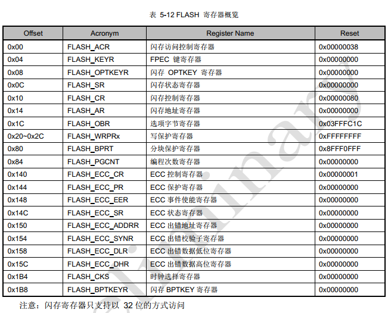